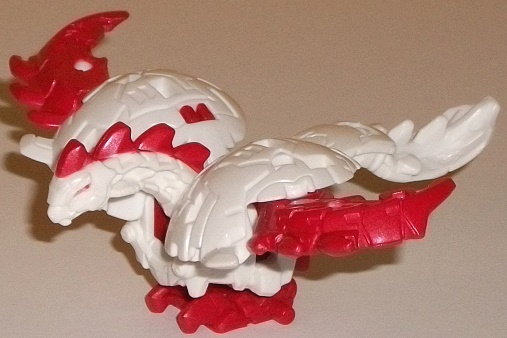
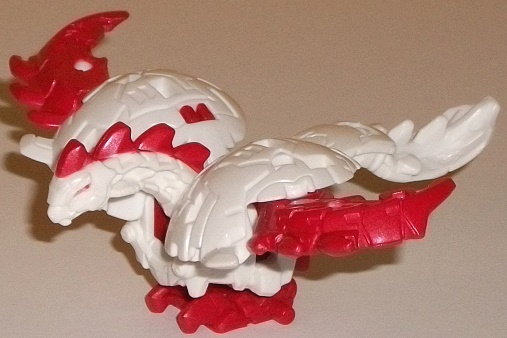

Size : Mini-Con
Difficulty of Transformation : Very Easy
Color Scheme : White, transparent light orange, and moderately dark red
Individual Rating : 7.7
Allegiances
: Decepticon
 Decepticon
Hammer
Decepticon
Hammer

Size
: Mini-Con
Difficulty of Transformation
: Very
Easy
Color Scheme
: White, transparent
light orange, and moderately dark red
Individual Rating
: 7.7
(NOTE: Because this is a repaint, this is not a full-blown review. This mainly covers any changes made to the mold and the color scheme, and merely compares it to the original RID2015 Hammer toy. For a review on the mold itself, read the review of the original Hammer toy here .)
Unfortunately, Crazybolt
doesn't come with the Mini-Con he has in the show, a cool little lizard-ball
guy named Slicedice. Sigh... he looked pretty cool. Still, at least the
Minicon redeco Crazybolt DOES come with is a redeco of a pretty awesome
Mini-Con mold! This time, Hammer's colors are mostly white and red. Well...
ENTIRELY white and red, at least when it comes to the base toy. In ball
mode he's mostly white with some of his "sawblades" being red, which is
a pretty nice color breakup. In bird mode you can make out the full color
scheme-- he's got red paint on the end of each wing, on the spikes on the
back of his neck, and on his eyes, and red plastic on his feet and a bit
of his lower body. The white and red, of course, go together quite well,
even though it's a pretty "Autobot-y" color scheme for a Decepticon. Still,
the white, at the very least, ties him to Crazybolt. I do wish there was
at least one other accent color on the main body, though, to break things
up just a bit more. For his armor bits, Hammer has transparent light orange
plastic, which goes great with the red, though perhaps making it just a
titch darker would've made it contrast against the white a bit more. The
molded-in details on the wing armor pieces look like flames in this color,
which looks pretty nice.
No mold changes have
been made to this version of Hammer.
 Crazybolt
Crazybolt
Size
: Mini-Con Deployer
Difficulty of Transformation
: Medium
Color Scheme
: White, milky dull
teal, and some black, dull goldish orange, red, and moderately light blue
Individual Rating
: 9.2
Crazybolt's vehicle mode
is a sleek hot rod-style car. He's got a long front section and hood, exhaust
pipes on the sides, and a relatively small spoiler on the back end. It's
definitely a fairly unique car mode, but a good, solid one; there's no
real extras in this mode at all except for (oddly) Crazybolt's bottom jaw
piece, which sticks out the back end of this mode. However, his Mini-Con
launcher (which launches ball Mini-Cons) is also on the back end, so if
you have a Mini-Con stuck in it it covers up that little jaw piece. Speaking
of the launcher, the trigger for it is on the top of this mode, in front
of the spoiler, and pushing it forward will launch the Mini-Con quite strongly
out of the launcher, so it's a pretty solid gimmick. (You push the rectangular
piece in the center of the launcher back in until it clicks to reset the
launcher.) As you'd expect from a sleek car, the mold detailing on Crazybolt
is fairly minimal in this mode-- as is also the usual for RID2015-- but
there's also some pretty cool simplistic details. I LOVE how the front
oversized section of this mode looks-- a long, sweeping front end with
a wedge-like front bumper, angular headlights, the usual "trio of divots"
on the front grill that are used on many RID2015 toys, and an exposed engine
in front of the windows. The cockpit for the car itself is a bit undersized,
but given how stylized this mode is, it doesn't bug me as much as it usually
does. He's also got massively large back tires compared to his front tires,
which really makes it look like he can burn rubber. As far as the color
scheme goes, Crazybolt is mostly white on the front end and a milky dull
teal for the rear two-thirds of the car. There's also a decent amount of
black on places like the wheels and painted on the windows, and some dull
gold-orange as well. All in all it's a solid scheme; the white and dull
teal go together quite nicely, and the gold-orange contrasts pretty well
with both colors to boot. The black is sort of neutral overall, but not
a bad addition. There's also some light blue used on the front grill, which
looks nice enough against the white. As far as paint overall, Crazybolt
is definitely above-average; beyond the windows and light blue bits already
mentioned, there's also orange-gold on the front wedge, the headlights,
the exposed engine, the exhaust pipes, and on the rear spoiler. (Crazybolt
does have taillights, but they sadly aren't painted.) There's also a bit
of red "outlining" on the headlights on the inside and back edges, which
is a pretty cool idea and a neat little accent.
Crazybolt's transformation
is a bit unique-- the sides of the car mode become his legs, the front
becomes his tail, and the entire top section slides up and then rotates
180 degrees to form an incredibly original robot mode, which is more of
a beast mode as he transforms into a robotic iguana monster. (This actually
fits his name, as the original Crazybolt was a Japanese redeco of
Beast
Wars Iguanus
.) The top of the car mode forms his back, so it's TECHNICALLY
an extra in this mode, but it makes the main body look more solid, so I
don't mind it at all. The waist is a bit overly skinny and could have used
a bit more "meat" on its bones, but otherwise this is a great mode. His
rear legs are particularly well-done, with the way the side of the car
fragments up forming very convincing beast legs-- using the exhaust pipes
from car mode to form Crazybolt's claws is just an ingenious move. His
tail is made up of the front wedge and grill of the car mode, which looks
decent enough, but I wish could've rotated 90 degrees to make it longer,
as opposed to the tail ending in a long odd hook-wedge instead. The front
legs are alright, but not as good as the back legs; they're not nearly
as long for one and don't splay out from the sides of the body. However,
the legs taken as themselves look pretty decent, and I do love those splayed
gold-orange angular claws. Crazybolt's head is formed from the jaw section
from the back end of the car mode and the top portion of the head "hidden"
below the exposed engine of the car mode. He's got iguana-like side "ears",
a triangular face, and even little molded-in teeth, with an angry-looking
face with red eyes. My favorite part of this mode, however, has to be that
his launcher is now in. His. MOUTH. So he can literally barf out Mini-Cons,
and his jaw can open obscenely widely to fit in a Mini-Con. I mean, this
is just SO characterful, and makes him fit his name pretty darned well.
(That said, when his mouth is closed, the sides of the launcher do poke
out below him chin a bit oddly.) But I consider this more than worth it
given the gimmick. Also, FYI the trigger for the launcher in this mode
is now right behind his front car window. His color scheme is largely the
same as his vehicle mode, given most of the details are still visible,
it's just that now the white is more prevalent throughout the figure instead
of just being on the front end, and the black-- which is used on many of
the interior pieces-- is a bit more obvious here as well on the main body.
For articulation, Crazybolt can move at the jaw (at two places), shoulders,
elbows, wrists, hips (at four points!), knees, and tail (at three points).
Given that he's a beast-- and especially comparing this to the other Mini-Con
Deployers-- this is rather impressive.
Crazybolt w/ Hammer is
EASILY my most recommended out of the Mini-Con Deployer sets. Crazybolt
has a solid alt mode and an incredibly unique beast/robot mode, complete
with a "barfing Mini-Con" launcher. I just love unique Decepticon designs
like this to bits, and wish more of these kinds of designs from the show
had seen toy form. Although it's a shame Crazybolt didn't come with his
show Mini-Con Slicedice, Hammer is still a solid partner Mini-Con himself.
Highly recommended, even if you don't care much about Mini-Cons.
Reviews by Beastbot